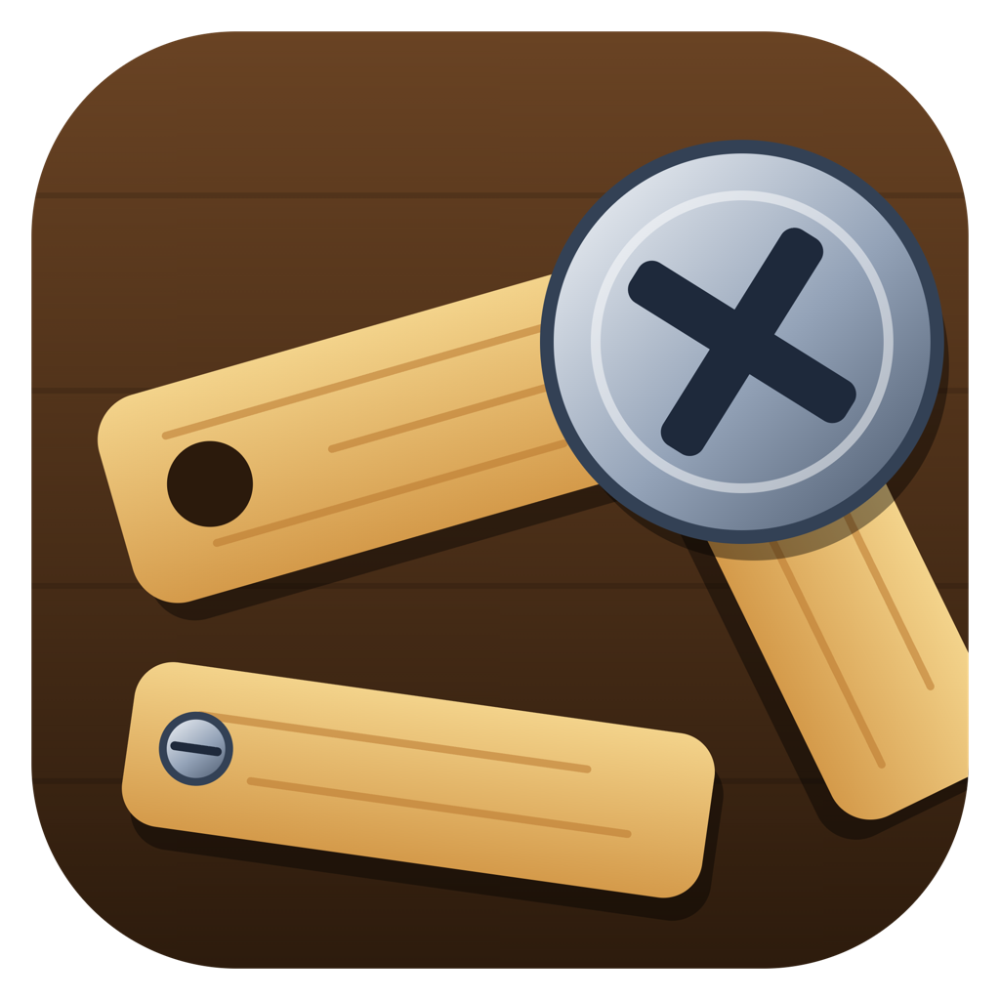

Screw Loose
Remove screws from overlapping wooden panels and let every panel fall. Each panel hangs from its last screw like a hinge, sliders slide away, and heavy plates need all their screws pulled, but you only have a few empty holes to move screws into. 200 levels across 5 workshops, with undo and hints. Tap or click a screw, then an empty hole.
Or download the app:
Installers are unsigned: on macOS right-click → Open the first time; on Windows choose "More info → Run anyway". · Source